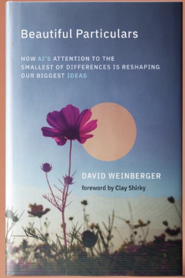
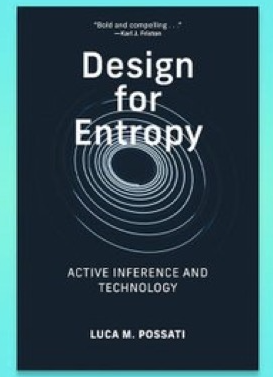
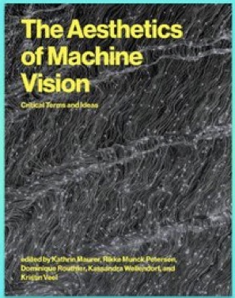

Beautiful Particulars
by David Weinberger
- Setting
- Published in Cambridge, Massachusetts, by The MIT Press
- About
- A work of ideas from The MIT Press.
- Source
- mitpress.mit.edu
- ISBN
- 9780262054867
Atlas › All the pins › Cambridge, Massachusetts
Book & Shores Atlas · North America
The MIT Press
9 books pinned here at the press, not as a story setting. The pin marks the press.

by David Weinberger
by Francine Berman

by Luca M. Possati
by Addy Pross
by Lee Alan Dugatkin
by Graham St John

by Edited by Kathrin Maurer, Rikke Munck Petersen, Dominique Routhier, Kassandra Wellendorf, and Kristin Veel
by Leah C. Stokes
by Max Haiven